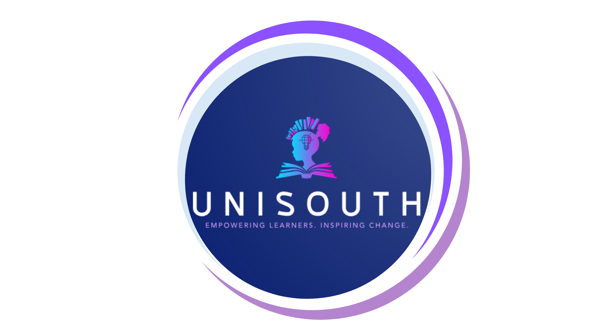

Available for junior QA roles
Robin Jerou E. Castillo
Fresh BSIT graduate focused on QA testing, AI, and Data Analytics. I love solving technical problems and keen on turning data into relevant insights.
About
Selected Projects
SideEye: Presence Detection Guidance for Visual Impairment
Assistive Navigation System using several ESP32 and sensors (mmwave and tof) that assists the Visually Impaired, as well as alerts during the travel of destination and from obstacles.
 Python
Python
 C++ (Arduino)
C++ (Arduino)
 Kotlin
Kotlin

UniSouth: Enrollment and Institution Portal System
Revolves around the principles of Front-end and Back-end development, which simplifies student enrollment and academic access while helping school administrators efficiently manage student records, courses, grades, and other academic information.
 .NET/WPF
.NET/WPF

Data Analysis Fire Statistics Report
Created dashboard and visualizations from the data of Bureau of Fire Protection government agency that helps out the awareness or produce strategies towards Fire Prevention Month in the Philippines.
 Power BI
Power BI

EEC Travel and Tourism Web App
Client-based that handles booking, applications, and Conducted mostly on the Front-end and SEO.
 WordPress
WordPress
 Elementor
CSS
Elementor
CSS

PawfectCarePH
Pet Supplement POS and Inventory Management System, which replaces manual sales and stock tracking with a centralized, real-time system.
 JavaScript
JavaScript

EEC Event Management System
Establishes as a web-based event and beauty service reservation system that allow users book and find venues, check services, and look for available personnel online. This reduces scheduling conflicts, long wait times, and the hassle of in-person or phone reservations.
JavaScript

Skills
Languages
Python, C#, SQL, HTML, CSS, JavaScript, C++
Tools & frameworks
WordPress, WooCommerce, Elementor, PowerBI, BugBug.io, LambdaTest KaneAI, SmartUI, CloudQAT, Tailwind CSS, VS Code/Visual Studio/Android Studio/Eclipse, Figma, Jupyter Notebook, PlatformIO, Github Pages, Netflify, Vercel
Currently learning
Selenium, Playwright, Power Apps, Git & GitHub, React, REST APIs, API Testing
Also comfortable with other technolgoies such as
Microsoft Azure, basic networking, virtual machines, AI agents in LangChain, excel, and etc.
Open to IT-related roles.
The fastest way to reach me is email. I usually reply within a day.